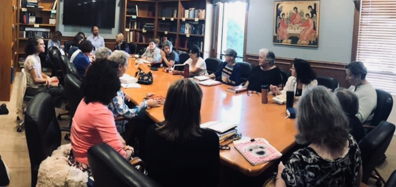

Be the Bee: How Should Orthodox Christians Preach the Gospel?
A short reflection on sharing the faith in everyday conversation — no theology degree required.
Whether you grew up in the Church or you're exploring for the first time, there's a place for you to learn, ask questions, and grow at SSPP.

Our weekly Bible Study brings together parishioners of all backgrounds to dig into Scripture together — no experience necessary, just an open mind.

For those exploring Orthodoxy or preparing for Chrismation, our Catechism classes walk through the fundamentals of the faith at a comfortable pace.
An informal, no-pressure way to meet other parishioners and ask questions over coffee after Liturgy.
Fellowship and faith conversation for the men of the parish, meeting regularly throughout the year.
Featuring Rev. Dr. Thomas Fitzgerald and Rev. Dr. John Chryssavgis on what it means to be Orthodox.
A short, approachable introduction to the basics of the Orthodox faith.
Curated from the Greek Orthodox Archdiocese of America's library — we'll swap these in a few times a year.
A short reflection on sharing the faith in everyday conversation — no theology degree required.
[One-line description in your own words — swap this in seasonally.]
[One-line description in your own words — swap this in seasonally.]
After a year of Catechism classes and countless conversations with Fr. Rick, [Name] was Chrismated into the Orthodox faith this past year — one of several parishioners to join our community through Chrismation recently.
[#] parishioners have been Chrismated into the SSPP community over the last [X] years — and we'd love for you to be next.

"Wherever you are on your journey — lifelong Orthodox, exploring for the first time, or somewhere in between — my door is open. Come ask your questions. There's no wrong way to start."
— Fr. Rick